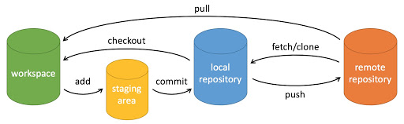

Git 基本操作
Git の仕事は、プロジェクトのスナップショットを作成・保存し、その後のスナップショットと比較することです。
この章では、プロジェクトのスナップショットの作成とコミットに関するコマンドを紹介します。
Git でよく使われるのは以下の 6 つのコマンドです：git clone、git push、git add 、git commit、git checkout、git pullこれらについては後で詳しく説明します。

説明：
- workspace：ワークスペース（作業ディレクトリ）
- staging area：ステージングエリア/インデックス
- local repository：バージョンライブラリ（ローカルリポジトリ）
- remote repository：リモートリポジトリ
簡単な操作手順：
$ git init $ git add . $ git commit
- git init - リポジトリを初期化します。
- git add . - ファイルをステージングエリアに追加します。
- git commit - ステージングエリアの内容をリポジトリに追加します。
リポジトリ作成コマンド
次の表は、git リポジトリを作成するコマンドを示しています：
| コマンド | 説明 |
|---|---|
git init |
リポジトリの初期化 |
git clone |
リモートリポジトリのコピーを取得します。つまり、プロジェクトをダウンロードします。 |
コミットと変更
Git の仕事は、プロジェクトのスナップショットを作成・保存し、その後のスナップショットと比較することです。
次の表は、プロジェクトのスナップショットの作成とコミットに関するコマンドを示しています：
| コマンド | 説明 |
|---|---|
git add |
ファイルをステージングエリアに追加 |
git status |
リポジトリの現在の状態を表示し、変更のあるファイルを表示します。 |
git diff |
ファイルの差分を比較します。つまり、ステージングエリアとワークディレクトリの差分です。 |
git difftool |
外部の差分ツールを使用して、ファイルの変更を表示・比較します。 |
git range-diff |
2つのコミット範囲間の差分を比較します。 |
git commit |
ステージングエリアをローカルリポジトリにコミットします。 |
git reset |
バージョンをロールバックします。 |
git rm |
ファイルをステージングエリアとワークディレクトリから削除します。 |
git mv |
ワークディレクトリのファイルを移動または名前変更します。 |
git notes |
注釈（コメント）を追加します。 |
git checkout |
ブランチを切り替えます。 |
git switch （Git 2.23 版本引入） |
より明確にブランチを切り替えます。 |
git restore （Git 2.23 版本引入） |
ファイルの変更を復元または取り消します。 |
git show |
Git オブジェクトの詳細情報を表示します。 |
コミットログ
| コマンド | 説明 |
|---|---|
git log |
履歴コミットログを表示 |
git blame <file>
|
指定したファイルの履歴変更記録をリスト形式で表示 |
git shortlog |
簡潔なコミットログの要約を生成 |
git describe |
Git のタグシステムに基づいて現在のコミットを説明する、読み取り可能な文字列を生成します。 |
リモート操作
| コマンド | 説明 |
|---|---|
git remote |
リモートリポジトリ操作 |
git fetch
|
リモートからコードベースを取得 |
git pull
|
リモートコードをダウンロードしてマージ |
git push
|
リモートコードをアップロードしてマージ |
git submodule
|
他の Git リポジトリを含むプロジェクトを管理 |
Git ファイルの状態
Git のファイル状態は3つに分けられます：ワークディレクトリ（Working Directory）、ステージングエリア（Staging Area）、ローカルリポジトリ（Local Repository）。これらの概念とその相互作用を理解することが、Git を習得する鍵です。
ワークディレクトリ（Working Directory）
ワークディレクトリは、ローカルコンピュータ上で表示されるプロジェクトファイルです。ファイルの表示、編集、削除、作成など、実際にファイルを操作する場所です。ファイルへのすべての変更は、まずワークディレクトリで行われます。
ワークディレクトリ内のファイルには、次のようないくつかの状態があります：
- 未追跡（Untracked）：新しく作成されたファイルで、Git に記録されていません。
- 変更済み（Modified）：Git に追跡されているファイルに変更がありましたが、これらの変更はまだ Git の記録にコミットされていません。
ステージングエリア（Staging Area）
ステージングエリアは、インデックス（Index）とも呼ばれ、ローカルリポジトリにコミットしようとしている変更を保存する一時的なストレージ領域です。ワークディレクトリ内の変更を選択的にステージングエリアに追加できるため、すべてのファイルの変更をコミットする必要なく、複数のファイルの変更を一度にコミットできます。
- 使用
git add <filename>コマンドを使用して、ファイルをワークディレクトリからステージングエリアに追加します。 - 使用
git add .コマンドを使用して、現在のディレクトリ内のすべての変更をステージングエリアに追加します。
git add <filename> # 添加指定文件到暂存区 git add . # 添加所有更改到暂存区
ローカルリポジトリ（Local Repository）
ローカルリポジトリは、.gitディレクトリ内のデータベースで、プロジェクトのすべてのコミット履歴を保存するために使用されます。変更をコミットするたびに、Git はステージングエリアの内容をローカルリポジトリに保存します。
使用git commit -m "commit message"コマンドを使用して、ステージングエリアの変更をローカルリポジトリにコミットします。
git commit -m "commit message" # 提交暂存区的更改到本地仓库
ファイル状態の変換フロー
未追跡（Untracked）： 新しく作成されたファイルは、最初は未追跡です。これらはワークディレクトリに存在しますが、Git には追跡されていません。
touch newfile.txt # 创建一个新文件 git status # 查看状态，显示 newfile.txt 未跟踪
追跡済み（Tracked）：git addコマンドを使用して未追跡のファイルをステージングエリアに追加すると、ファイルは追跡済みの状態になります。
git add newfile.txt # 添加文件到暂存区 git status # 查看状态，显示 newfile.txt 在暂存区
変更済み（Modified）： 追跡済みのファイルに変更を加えると、これらの変更は変更済みの状態として表示されますが、まだステージングエリアには追加されていません。
echo "Hello, World!" > newfile.txt # 修改文件 git status # 查看状态，显示 newfile.txt 已修改
ステージ済み（Staged）：
使用git addコマンドを使用して変更したファイルをステージングエリアに追加すると、ファイルはステージ済み状態になり、コミットを待ちます。
git add newfile.txt # 添加文件到暂存区 git status # 查看状态，显示 newfile.txt 已暂存
コミット済み（Committed）：
使用git commitコマンドを使用してステージングエリアの変更をローカルリポジトリにコミットすると、これらの変更が記録され、ファイルの状態は追跡済み状態に戻ります。
git commit -m "Added newfile.txt" # 提交更改 git status # 查看状态，工作目录干净その他の拡張
hepburn
158***9602@qq.com
git commit、git push、git pull、 git fetch、git merge の意味と違い
git pullに相当しますgit fetch + git merge。
hepburn
158***9602@qq.com
tuntuntunwu
wxq***567567@126.com
git 基本操作の注意点まとめ：
ローカルリポジトリをクローンするコマンドの方法。
<source repository>：クローン元のローカルリポジトリのパス
<destination repository>：クローン先の別の場所のパス。例えば、git clone d:/git e:/git11 は、d:/git のリポジトリ（つまり隠しファイル .git を含むディレクトリ）を e:/git11 ディレクトリにクローンすることです。
注意：
1、<destination repository>ディレクトリはファイルシステム上に作成されていないか、作成されていても中身が空である必要があります。そうでないとクローンは成功しません。
2、リモートからリポジトリを取得する場合とは異なり、パスの最後に.gitを書いてリポジトリであることを示す必要はありません。
簡潔なステータス出力を取得します。
すべての変更を直接コミットします。add と commit を一緒に実行したことに相当します。
注意：すべてのファイルが tracked である必要があります。untracked のファイルを新規作成した場合、このコマンドは実行されません。
git reset とは異なり、reset はディレクトリツリー全体を置き換え、余分なファイルは削除されます。一方 checkout は指定されたファイルだけを置き換え、余分なファイルは保持して何も処理しません。
ファイルを作業領域とステージング領域から削除します。—cached を使用するとステージング領域からのみ削除します。–rf <directory> を使用すると、指定したディレクトリ内のすべてのファイルとサブディレクトリを削除できます。
作業領域とステージング領域で移動または名前変更を行います。<destination> がディレクトリ名でない場合は、名前変更を実行します。ディレクトリ名の場合は、移動を実行します。
tuntuntunwu
wxq***567567@126.com
汪洋
768***667@qq.com
図解 Git
上記の4つのコマンドは、作業ディレクトリ、ステージングディレクトリ(インデックスとも呼ばれます)、およびリポジトリの間でファイルをコピーします。
git add files現在のファイルをステージング領域に置きます。git commitステージング領域のスナップショットを生成してコミットします。git reset -- files最後の1回を取り消すために使用しますgit add files、また次を使用することもできますgit resetすべてのステージング領域のファイルを取り消します。git checkout -- filesファイルをステージング領域から作業ディレクトリにコピーして、ローカルの変更を破棄します。汪洋
768***667@qq.com
DGd
345***34@qq.com
参考アドレス
Git よく使うコマンド大全
git よく使うコマンド(画像をクリックすると拡大表示します)：
git init # 初始化本地git仓库（创建新仓库） git config --global user.name "xxx" # 配置用户名 git config --global user.email "xxx@xxx.com" # 配置邮件 git config --global color.ui true # git status等命令自动着色 git config --global color.status auto git config --global color.diff auto git config --global color.branch auto git config --global color.interactive auto git config --global --unset http.proxy # remove proxy configuration on git git clone git+ssh://git@192.168.53.168/VT.git # clone远程仓库 git status # 查看当前版本状态（是否修改） git add xyz # 添加xyz文件至index git add . # 增加当前子目录下所有更改过的文件至index git commit -m 'xxx' # 提交 git commit --amend -m 'xxx' # 合并上一次提交（用于反复修改） git commit -am 'xxx' # 将add和commit合为一步 git rm xxx # 删除index中的文件 git rm -r * # 递归删除 git log # 显示提交日志 git log -1 # 显示1行日志 -n为n行 git log -5 git log --stat # 显示提交日志及相关变动文件 git log -p -m git show dfb02e6e4f2f7b573337763e5c0013802e392818 # 显示某个提交的详细内容 git show dfb02 # 可只用commitid的前几位 git show HEAD # 显示HEAD提交日志 git show HEAD^ # 显示HEAD的父（上一个版本）的提交日志 ^^为上两个版本 ^5为上5个版本 git tag # 显示已存在的tag git tag -a v2.0 -m 'xxx' # 增加v2.0的tag git show v2.0 # 显示v2.0的日志及详细内容 git log v2.0 # 显示v2.0的日志 git diff # 显示所有未添加至index的变更 git diff --cached # 显示所有已添加index但还未commit的变更 git diff HEAD^ # 比较与上一个版本的差异 git diff HEAD -- ./lib # 比较与HEAD版本lib目录的差异 git diff origin/master..master # 比较远程分支master上有本地分支master上没有的 git diff origin/master..master --stat # 只显示差异的文件，不显示具体内容 git remote add origin git+ssh://git@192.168.53.168/VT.git # 增加远程定义（用于push/pull/fetch） git branch # 显示本地分支 git branch --contains 50089 # 显示包含提交50089的分支 git branch -a # 显示所有分支 git branch -r # 显示所有原创分支 git branch --merged # 显示所有已合并到当前分支的分支 git branch --no-merged # 显示所有未合并到当前分支的分支 git branch -m master master_copy # 本地分支改名 git checkout -b master_copy # 从当前分支创建新分支master_copy并检出 git checkout -b master master_copy # 上面的完整版 git checkout features/performance # 检出已存在的features/performance分支 git checkout --track hotfixes/BJVEP933 # 检出远程分支hotfixes/BJVEP933并创建本地跟踪分支 git checkout v2.0 # 检出版本v2.0 git checkout -b devel origin/develop # 从远程分支develop创建新本地分支devel并检出 git checkout -- README # 检出head版本的README文件（可用于修改错误回退） git merge origin/master # 合并远程master分支至当前分支 git cherry-pick ff44785404a8e # 合并提交ff44785404a8e的修改 git push origin master # 将当前分支push到远程master分支 git push origin :hotfixes/BJVEP933 # 删除远程仓库的hotfixes/BJVEP933分支 git push --tags # 把所有tag推送到远程仓库 git fetch # 获取所有远程分支（不更新本地分支，另需merge） git fetch --prune # 获取所有原创分支并清除服务器上已删掉的分支 git pull origin master # 获取远程分支master并merge到当前分支 git mv README README2 # 重命名文件README为README2 git reset --hard HEAD # 将当前版本重置为HEAD（通常用于merge失败回退） git rebase git branch -d hotfixes/BJVEP933 # 删除分支hotfixes/BJVEP933（本分支修改已合并到其他分支） git branch -D hotfixes/BJVEP933 # 强制删除分支hotfixes/BJVEP933 git ls-files # 列出git index包含的文件 git show-branch # 图示当前分支历史 git show-branch --all # 图示所有分支历史 git whatchanged # 显示提交历史对应的文件修改 git revert dfb02e6e4f2f7b573337763e5c0013802e392818 # 撤销提交dfb02e6e4f2f7b573337763e5c0013802e392818 git ls-tree HEAD # 内部命令：显示某个git对象 git rev-parse v2.0 # 内部命令：显示某个ref对于的SHA1 HASH git reflog # 显示所有提交，包括孤立节点 git show HEAD@{5} git show master@{yesterday} # 显示master分支昨天的状态 git log --pretty=format:'%h %s' --graph # 图示提交日志 git show HEAD~3 git show -s --pretty=raw 2be7fcb476 git stash # 暂存当前修改，将所有至为HEAD状态 git stash list # 查看所有暂存 git stash show -p stash@{0} # 参考第一次暂存 git stash apply stash@{0} # 应用第一次暂存 git grep "delete from" # 文件中搜索文本“delete from” git grep -e '#define' --and -e SORT_DIRENT git gc git fsckDGd
345***34@qq.com
参考アドレス